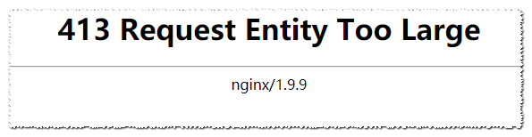

在进行文件上传的操作时, Nginx 报错: 413 Request Entity Too Large
问题展示
又是熟悉的踩坑环节😂! 看看今天阿航踩了啥坑吧:
在尝试上传文件到服务器时, 碰到了大大的:

原因
nginx的默认文件上传大小大于你上传文件的大小
解决方案
找到nginx配置文件
找到nginx的配置文件(nginx/conf/nginx.conf)
修改server的location的配置
找到你要修改的server, 比如:
server {
listen 80;
server_name adb.abc.com;
location / {
root html;
index index.html index.htm;
}
}
在location块中添加一行配置:
client_max_body_size 64m; # 改为你需要的大小!
修改后就变为了:
server {
listen 80;
server_name adb.abc.com;
location / {
root html;
index index.html index.htm;
client_max_body_size 64m; # 改为你需要的大小!
}
}
保存并重启
保存文件, 重启nginx(首个nginx替换为你安装的目录):
nginx/sbin/nginx -s reload
如果你在Centos使用yum安装的, 那么直接输入重启服务命令:
systemctl restart nginx
附官方文档
若上述方案未解决你的问题, 你也可以去查看nginx官方中文文档
结语
对文章若有任何问题、异议以及改进建议, 欢迎在下方进行评论. 作者将尽快回复! 获取最新文章, 欢迎阅读官方博客 .
更多更好的教程/博客/资讯, 欢迎访问我的官网: 阿航的技术小站 .